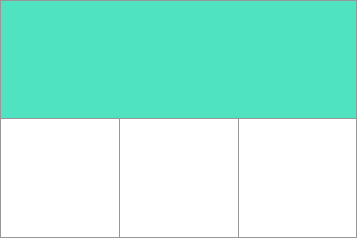

The Garnish | CSS Grid
Join us on...

#generation-x

#tabletop

#movies

#cats_and_doggos
Our mentors

are super heroes!
Tonight's Agenda: CSS Grid
- CSS Layout Systems
- Grid Container
- Tracks (Explicit Columns and Explicit Rows)
- Grid Specific CSS Functions

Layout System Basics
CSS Grid and similarly CSS Flexbox give us powerful layout mechanisms out of the box.
What are the benefits to a Layout System?
- Handles more complex layout needs.
- Handles wrapping and flexibility for different screen sizes.
- Allows for more maintainable code as we are no longer needing workarounds and hacks.
- It has grown in popularity so much its basically the industry standard.
CSS Flexbox VS CSS Grid

The Great Battle??
No.. Not really just different systems for different situations.
We can even use Grid and Flexbox together! They complement eachother.
We use Flexbox when we need to have elements layout in one-dimension. IE: either a row or a column. Elements can wrap into multiple rows or columns but cannot be in both at one time. Flexbox Example
We use Grid when we need element layouts in two-dimensions. IE: Elements aligned in both rows and columns. Grid Example
Let's see what Grid can do!
Here are a few examples of what we can make using Grid
Grid Advent Calendar Interesting Note: this layout has rows that do not exactly line up with the columns!
Grid Nom Nom Gallery Interesting Note: this layout has a defined height for the first couple of rows. Later each row has dynamic heights. Grid is so flexible!
With the sunsetting of Internet Explorer Grid is even more available for use! If ever in doubt check CanIUse
What Browsers Support Grid?
Pretty much all of them now! Internet Explore was sunsetted by Microsoft and most other browser support Grid. If in doubt, check CanIUse.
If necessary, we can use CSS Feature Queries using the @supports selector to add support for Grid.
@supports(display: grid) {
/* do cool grid work */
}
How do we add CSS Grid to a project?
Start by creating a parent container with a class to style.
Common parent containers include main, header, footer, form, section, article, div. Keep Semantic HTML in mind. Use div when necessary but try to use one the others when possible.
<section class="container>
<!--child elements here -- >
</section class="container>
.container {
display: grid;
}
The default is display:block. By overriding the display to use grid, we are telling the site that all elements inside of the conainer should be grid items.
Our First Grid Container
Lets take a look at a Grid layout

Note the defined columns and rows! A grid track is the space between any two lines in a grid.
In this example we have 2 rows and 3 columns. The first row spans 3 columns. The top row, highlighted in green, is the first row track.
Tracks: Explicit Columns
Define columns using grid-template-columns property to define the size of each column.
.container {
display: grid;
grid-template-columns: 200px 200px;
}
In the example, we created two columns that are each 200px. We used pixel size but we can use any unit of measurement we want.
If there are more elements than defined columns, the element will wrap to the next row.
Tracks: Explicit Rows
Define rows using grid-template-rows property to define the size of each row.
.container {
display: grid;
grid-template-rows: 200px 200px;
}
In the example, we created two rows that are each 200px. We used pixel size but we can use any unit of measurement we want.
If there are more elements than defined rows, the element will wrap to the next column.
Implicit Tracks
In our previous examples we used absolute size in our style definition. We can also use implicit sizing and let grid items use available space using the value auto.
.container {
display: grid;
grid-template-columns: auto auto;
}
We can even mix implicit and explicit sizes. For example, to create a 2 column grid where we fix the size of one column to 250px and let the other fill the space-
.container {
display: grid;
grid-template-columns: auto 250px;
}
Relative Sizing
Grid gives us a new unit of measure to work with, fr. The fr unit allows sizing relative to other tracks and is an abbreviation for "frame". This allows us to define size relative to a base size.
.container {
display: grid;
grid-template-columns: 2fr 1fr;
}
In this example, the first column will be twice the size (or take up two frames) as the second column. We can combine all of the various sizing techniques for ultimate control!
Identifying Lines
Lines that make up the borders of tracks are numbered for easier reference.
Lines are numbered in increasing sequence from left to right and top to bottom
Naming Lines
Sometimes we want to add more context or descriptions for our lines in the css code. [] - Square brackets denote the name. For example:
.container {
display: grid;
grid-template-columns: [col-1-start] 1fr [col-2-start] 1fr [col-2-end];
}
Once the lines have names, we can use that in later css codes to place elements more precisely. We will take a deeper at this in a future slide.
Positioning Elements
In our previous examples we have let everything flow and wrap. What if we want to skip a column or a row?
.container {
display: grid;
grid-template-columns: 1fr 1fr 1fr;
grid-template-rows: 1fr 1fr 1fr;
}
.grid-item {
grid-column-start: 1;
grid-column-end: 4;
grid-row-start: 1;
grid-row-end: 3;
}
Positioning Elements With Named Columns and Rows
We can accomplish the same thing as our last example with named lines.
.container {
display: grid;
grid-template-columns: [start-col] 1fr [mid-1-col] 1fr [mid-2-col] 1fr [end-col];
grid-template-rows: [start-row] 1fr [mid-row] 1fr [end-row];
}
.grid-item {
grid-column-start: start-col;
grid-column-end: end-col; /* span across 3 columns for this item */
grid-row-start: start-row;
grid-row-end: mid-row;
}
Shorthand Notation for Positioning
Like most things in coding, we have found a way to cut down on typing. There is a shorthand notation for line positioning. We can use a a few new properties, grid-column and grid-row.
The value will be two part. The syntax is start-line / end-line.
.grid-item {
grid-column: 1 / 4; /* start on line 1 end on line 4 */;
grid-row: 1;
}
Work Time
See you soon!

Grouping Selectors
We can group multiple selectors and apply one style broadly across the site. This works with both element selectors and class selectors.
h1, h2, h3, h4 {
color: green;
}
.cocktail, .coding {
color: pink;
}
Combining Selectors
We can increase specificity by combining selectors. This allows us to be able to style targeted elements.
<p class="status">Coding with a cocktail on the side.</p>
<p class="learning">I am learning CSS and web development.</p>
p {
color: purple;
}
p.status {
color: seagreen;
}
Another Example
<p class="about learning">I am learning CSS and web development.</p>
<p class="about pets">I have 2 pets - a goofy dog and a grumpy cat.</p>
p.about {
color: purple;
}
p.about.pets {
color: seagreen;
}
Combinig selectors lets us have so much control over our styles!!
Attribute Selectors
We can use attribute selectors to target elements with a specific attribute.
<a href="https://example.com">Example</a>
a[href="https://example.com"] {
background-color: wine;
}
The snippets above will find any <a> element with an href attribute that matches "https://example.com" and give it a wine background.
Location Based Selectors
We can define selectors based on the location of the element in the DOM (browsers turn the HTML we write into the DOM)
Location selectors use the elements' relationships to eachother to navigate.
Elements relationships? What?
<parent>
<child>
<grandchild></grandchild>
</child>
<child></child>
</parent>
Applying Location and Relationships to CSS
<ul>
<li>
<em>Most Important Item</em>
</li>
<li>Item 2</li>
</ul>
li em {
color: freshair;
}
Note the space between the selectors. This rule will tell the browser to change the text color to freshair for all <em> elements that have <li> as an ancestor.
Combinators
Combinators is a fancy word for combining selectors. There are a few different combinators.
Our last slide covered one of these, a Descendant Combinator... But thats not all!
Children Combinator: > it must match an existing parent child relationship in the DOM.
Valid as <em> is a child of <li>
li > em {
color: vividtangerine;
}
Invalid as <em> is NOT a child of <ul>
ul > em {
color: vividtangerine;
}
More Combinators
Adjacent Combinator
We can use the + in our rules to apply style to the second element in the DOM. Sticking with our list example:
li + li {
color: electriclime;
}
This will style our second list item to have lime green as the text color.
There are other combinators! Here is a great reference for combinators.
State Based Selectors
We can change the style of an element based on the state of the element. So for example, an element may look different based on if the user hovers over the element.
The general syntax to create a state based selector is to use a colon between the selector and the state.
If there is no state with the selector, it is just the base style of the element.
button {
color: red;
}
button:hover {
color: blue;
}
The button in this CSS will have red text, but if a user hovers over it the text will turn blue.
Styling specific parts of a selector
We have learned ways to get more and more specific with our CSS. We can even style certain parts of a selector.
We do this by using pseudo-elements. Pseudo-elements tell the browser what part of the selector to style.
The general syntax for this is selector::pseudo-element, but lets look at an example.
p::first-line {
color: blue;
}
The snippet above will make the first line of all <p> elements have blue text.
A few other common pseudo-elements are before and after this will just add some style before or after a selector.
Debugging in Chrome
Browsers are where our site will be viewed, it is also where we can debug our CSS and HTML.
Work Time
See you soon!
Box Model
The Box Model is a great way to visualize spacing on our site.

Other important layout properties:
display - specifies the display behavior of the element. Typically it will have either the value of "inline", meaning the element does not create a new line, or "block" meaning the element does create a new block.
Margin, Padding, Border, Display Example
.example {
display: block;
margin: 50px;
padding-left: 60px;
border-style: dotted;
border-color: green;
}
Text CSS Options
Font Colors
<p style="color: #484e78;">Hey girl</p>
Font Size
<p style="font-size: 5em;">Hey girl</p>
Text Alignment - can be left, right, center, justify
<p style="text-align: left;">Hey girl</p>
Font Family
<p style="font-family: Roboto, sans-serif;">Hey girl</p>
<p style="font-size: 5em;">Hey girl</p>
Text Alignment - can be left, right, center, justify
<p style="text-align: left;">Hey girl</p>
Font Family
<p style="font-family: Roboto, sans-serif;">Hey girl</p>
Adding Icons to Selectors
We can even use CSS to add icons to our site!
There are tools such as Font Awesome where we can get icons to use for free.
If used, tools like font awesome will need to be either imported in the css file or linked in the <head> of the HTML.
We talked about pseudo-elements earlier. This is the prime time to use one!
p::before {
font: var(--fa-font-solid);
content: "\f57b";
}
In short, the above snippet will put the icon from Font Awesome before any <p> elements.
Thank you!
Have a great time making the web more beautiful!